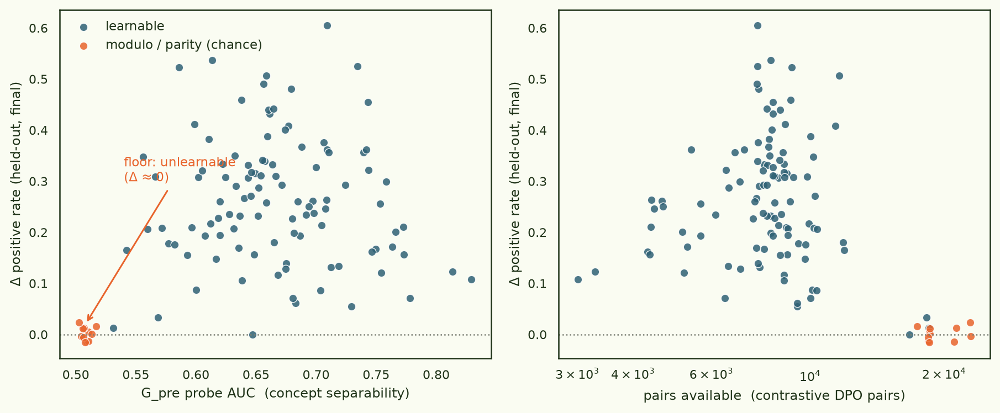
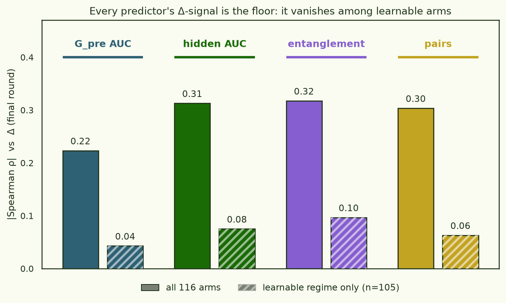

Kernel separation and DPO learnability: a floor, not a gradient
If you can see a concept in a model's geometry, can you teach the model to do it? A pilot (16 concepts) hinted yes — a concept's tracked how far could move it — but 16 arms couldn't out-argue a plain hidden-state probe, and the two predictors were 93% collinear. This piece scales the question to 116 concepts (100 new arms built from the pilot's cached rollouts + gradient embeddings, pooled with the original 16) and asks it with power. The answer is cleaner and more deflationary than the pilot's: separation predicts learnability only as a floor.
Chance-separation concepts are unlearnable; every concept above that floor learns — with almost no further dependence on how separable it is, by any metric, gradient or hidden-state.
The dependent variable throughout is — never training loss or preference accuracy. That distinction turns out to carry the whole story.
- base model
- gemma-3-1b-it
- concepts
- 116 program-defined classifiers (100 suite @ Gpre AUC 0.50–0.78 + 16 pilot); each is a rule over the model's own text (thresholds, char/word statistics, phrases, discourse features, and xor/or/and combinations)
- separation
- rank-256 CountSketch of per-example Adam-preconditioned gradients over the projection matrices; probe AUC of + vs − classes. Hidden-state probe on layer-mean activations as the baseline
- DPO
- one arm per concept, LoRA r=32, 3 epochs, ≤4096 contrastive pairs; 50 arms/pod, work-stealing queue, 100/100 arms, zero failures
- eval
- Δ positive rate over 384 held-out questions (disjoint
evalsplit), base vs after each epoch, every generation labelled with all 116 programs - code
- ArcadiaImpact/pane#1 · experiment
gpre-dpo-gemma3-1b
§1A floor, not a gradient
Plot Δ against separability and the shape is not a trend — it is a cliff
and a cloud. Eleven concepts sit at chance separation (Gpre AUC ≤
0.517); every one of them is a modulo / parity rule
(modulo:3, xor(·, modulo:2),
or(modulo:2, modulo:3), …). Their mean Δ is
+0.002 — dead flat. The other 105 concepts learn, mean Δ
+0.26, spanning 0 to +0.61.

A single binary — is the concept above the floor or not — already explains R² = 0.30 of the variance in Δ (point-biserial ρ = −0.54). That is more than any continuous separation metric explains, and it is essentially all of what they explain: the pilot's headline "separation predicts learnability" was, with power, mostly a detector for one kind of concept that can't be learned at all.
§2The floor fits — it just doesn't generalize
Why are the modulo concepts unlearnable? Not because DPO fails to optimise them. A post-hoc sweep of every arm's training curve confirms all 100 suite arms reached ≥0.92 preference accuracy on their training pairs (median 0.96, no divergence) — the modulo arms fit their pairs exactly as well as the concepts that generalise. What separates them is the and what happens on held-out prompts:
| concept (representative) | train pref-acc | reward margin | Δ held-out | |
|---|---|---|---|---|
xor(boolean, modulo:2) | floor | 0.98 | 0.82 | −0.00 |
xor(·, modulo:2) | floor | 0.96 | 0.84 | +0.02 |
threshold:first_sentence_chars | learnable | 0.98 | 2.94 | +0.54 |
not(threshold:comma_per_word) | learnable | 0.95 | 3.63 | +0.61 |
The modulo arms reach 0.98 preference accuracy on their DPO pairs and move the held-out rate by zero. The floor is a generalization failure, not an optimization one.
A parity-of-word-count rule is uncorrelated with the prompt, so the model can memorise "prefer this specific response over that one" pair by pair (high pref-acc, but a thin ~0.8 margin) without there being any transferable direction to push — nothing generalises to new questions. A real feature has a represented direction; DPO's pair-fit rides it out to a 3–4× larger margin and the behaviour appears on held-out prompts. Separability, it turns out, is a readout of exactly this: whether there is a direction to find.
§3Above the floor, nothing grades — and the "pairs confound" is the floor again
Restrict to the 105 learnable concepts and every marginal correlation with Δ collapses. Gpre AUC, hidden-state AUC, entanglement, and all fall from ρ ≈ 0.2–0.3 across the full set to |ρ| ≤ 0.10 — none significant.

This also disposes of what looked like a data confound. Across all 3,000 candidate concepts, separability and pair-count are ρ = −0.89 collinear — more separable concepts have fewer pairs — and pairs anti-correlate with Δ (ρ = −0.30). It reads like "more training data hurts", which is nonsense. It isn't real: the modulo concepts are uncorrelated with the prompt, so they throw both classes on nearly every question and pile up 17k–23k pairs (2–3× the median), and they're the unlearnable floor. Those same 11 points make the correlation. Among learnable arms, ρ(pairs, Δ) = −0.06 (p = 0.52). Separability, pair-count, and learnability are three views of one axis — is the concept a represented feature or noise — not a predictor and a nuisance.
Which settles the pilot's actual question — does gradient geometry beat a hidden-state probe? In a standardized OLS on all 116 arms the hidden probe takes all the signal (β = +0.91, p = 8×10⁻¹¹) and Gpre AUC goes to the wrong sign (β = −0.43, p = 0.001, a suppressor under 0.83 collinearity); on the raw correlations is −1.71 (p = 0.086). But the honest reading isn't "hidden wins" — it's that above the floor neither one grades outcomes, so the contest is over a cloud with no gradient in it.
§4What (barely) survives
Two things flicker above the noise. First, an early-speed signal: at epoch 1, among learnable arms, hidden-state AUC (ρ = +0.24, p = 0.01) and (ρ = −0.23, p = 0.02) do predict which concepts have moved already — while Gpre probe-AUC stays flat (+0.08, n.s.). By epoch 3 the slower concepts have caught up and it washes out.
Second, entanglement is the one kernel-specific quantity that survives partialling out pairs in the full sample (partial ρ = −0.26 at epoch 1, p = .005; 4-variable OLS β = −0.24, p = .026) — the basis for an earlier read of this run that called it "the surviving kernel signal." I don't think that holds up: within the learnable regime its final-epoch signal is n.s. (−0.10) and its epoch-1 signal drops to −0.08 once pairs is controlled. Like everything else, most of its apparent survival is the floor (the modulo arms have high entanglement and zero Δ). Yuan et al.'s gradient-entanglement mechanism is consistent with the data — more-entangled concepts do move a little slower early — but it is not cleanly established above the floor here.
§5Verdict & what's next
Powered, the pilot's correlation resolves into a single effect: DPO cannot move concepts at the chance-separation floor (surface-arithmetic noise it can memorise but not generalise), and it moves everything else with little further dependence on separability. Gradient-kernel probe-AUC is neither a better nor an additive learnability predictor than a hidden-state probe. Two caveats keep this from being the last word: the sketch is lossy (698M-dim gradients → 4,096-dim sketch → 256-dim, versus exact 1,152-dim hidden states), so a wider sketch is the untested fair fight; and the separability↔pairs collinearity is structural, so the clean test needs a matched-dose design.
- Matched-dose rerun — fix pairs/arm equal across arms to break the separability↔pairability collinearity experimentally, then re-ask whether any metric grades learnability above the floor.
- Entanglement-first selection — stratify on entanglement rather than AUC and test the early-speed signal directly.
- The endgame — repeat on midtrained variants and ask whether midtraining moves separation/entanglement and learnability follows.
experiments/gpre-dpo-gemma3-1b/
(RESULTS.md § SUITE100 EXTENSION; pooled_analysis.py).
Data · arcadia-impact/pane-gpre-dpo-gemma3-1b-data (
suite100/results/…-pooled/ — pooled stats, scatter, 116×116
transfer heatmap); adapters (100 arms × 3 epochs) in the sibling weights repo.
Runs · 2× 4×H100, DPO 100 arms + sharded eval, 2026-07-17; front-half rollouts/embeddings reused from the pilot (no model-side recompute).
Figures from per-arm eval data; per-arm training metrics (pref-acc, margin) are the aggregate sweep plus four representative arms — the pods were torn down after upload and the checkpoint-level trainer states were not retained.